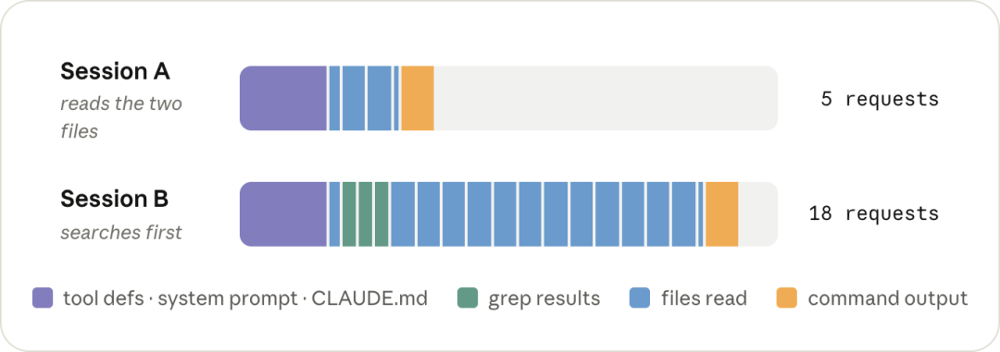
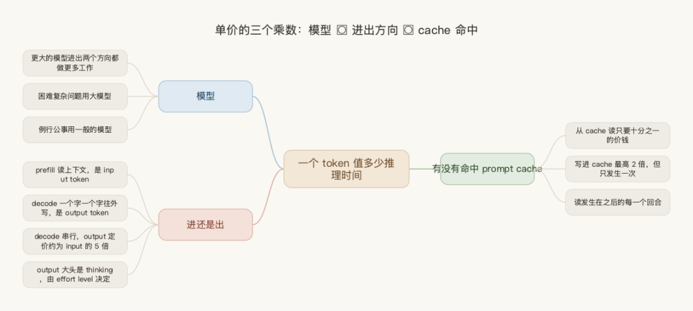
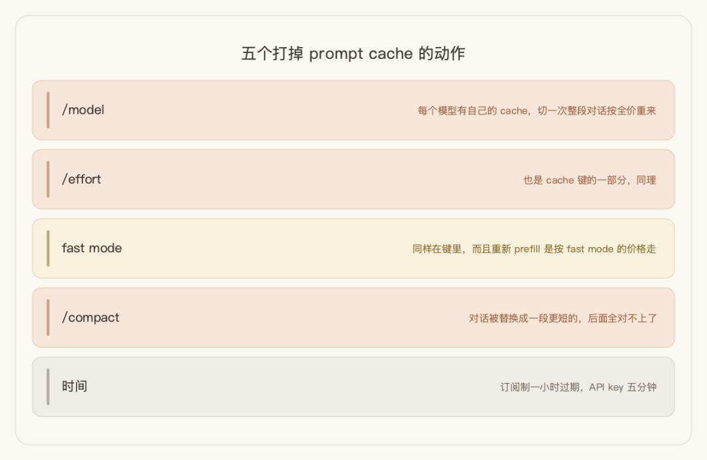
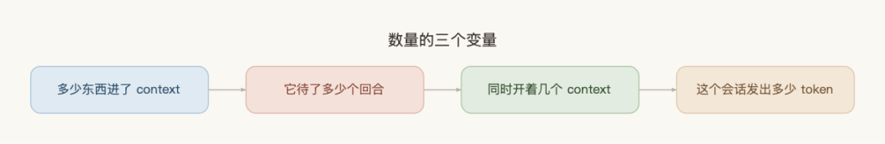
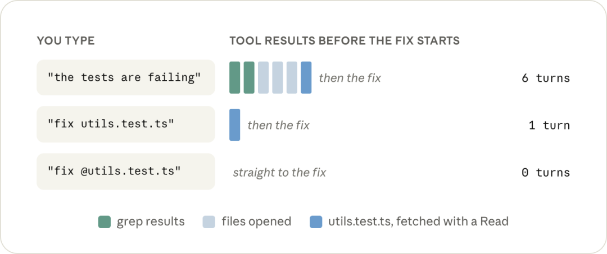
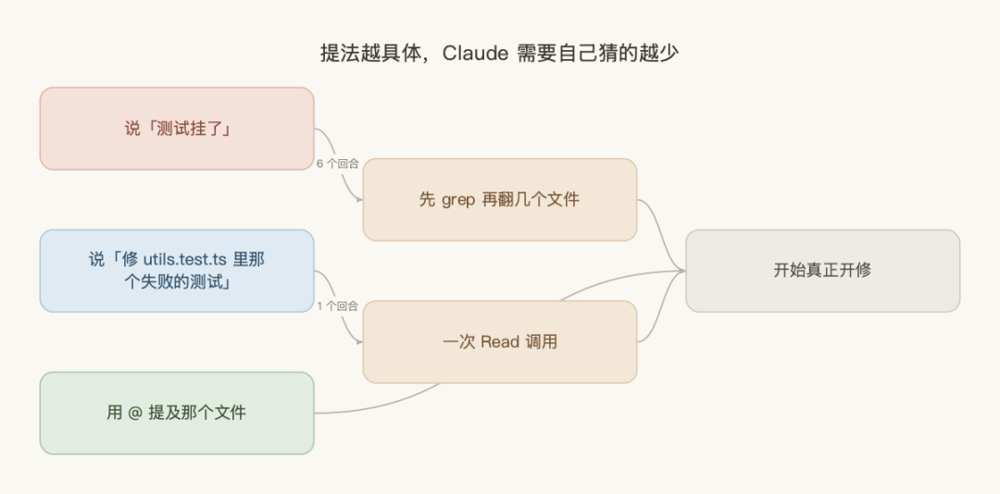
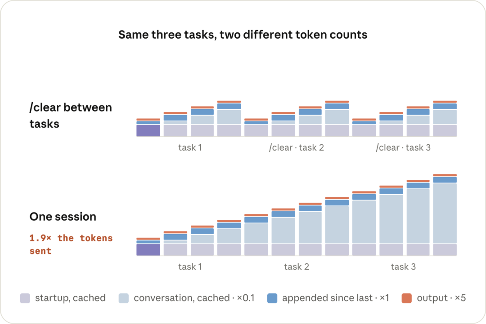
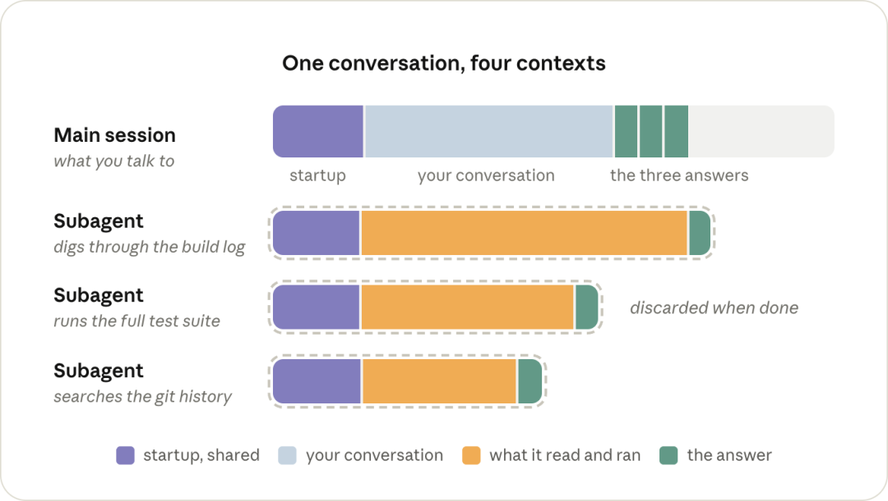
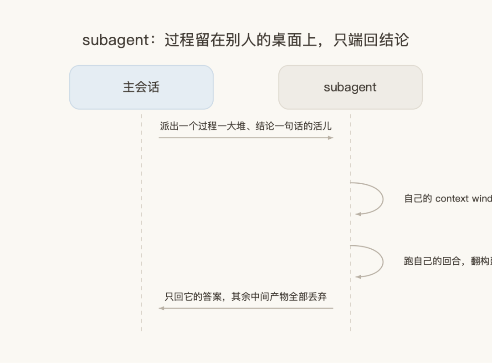
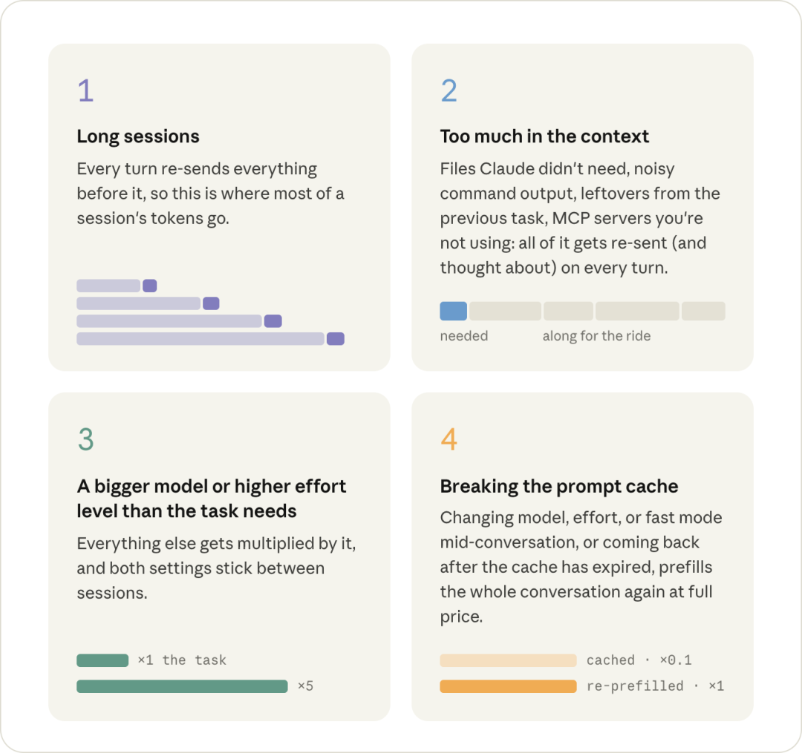

带团队推 AI 编码这一年多，有个现象我一直没想明白：同样一个人，同样的活，有的会话跑得干净利落，有的会话越到后面越钝，模型开始答非所问，额度也掉得飞快。
我以前把这归结为"今天模型状态不好"。上周 Anthropic 官方发了一篇讲会话价值最大化的博客，把 Claude Code 的成本模型第一次完整摊开，我才意识到这根本不是玄学——是一笔可以算清楚的账，而且大部分浪费是我自己造成的。
这篇我按官方那套成本模型走一遍，每一节接我自己的用法和踩过的坑。文末有六条能立刻改的习惯。
一、先看这张账单
官方给了一组对照：同一个修复任务，两种跑法。

Session A 直接读那两个相关文件，5 个请求收工。Session B 先在仓库里 grep 一通，在走到同样那两个文件的路上顺手读了十来个，18 个请求。
3.6 倍的差距，修的是同一个 bug。
但真正让我坐直的不是这个倍数，而是贵的那一次，质量还更差。因为那十来个不相关的文件不会读完就消失，它们留在对话里，之后每一个回合模型都得绕着它们思考一遍。
这就是我一直没想明白的"模型状态不好"的真身：不是模型笨了，是我给它的桌面上堆满了跟当前任务无关的东西。
这里官方有一句定调，我认为是全文最反直觉的一句：
对 token 高效并不意味着总共用得更少。它意味着确保你用掉的那些，是花在你真正要求的事情上。
这句话直接否掉了大多数团队的第一反应。我们内部一开始的管理动作也是"给额度、提醒大家省着点用"——现在回头看，这条路从一开始就错了。要管的不是花多少，是花得准不准。
顺着这个模型往下拆，一个会话的账单由两部分构成：每个 token 多少钱，和这个会话发出多少 token。前者是单价，后者是数量。
二、单价：三个乘数
你按 token 付费，但实际买的是推理时间。有三件事决定一个 token 要占掉多少这样的时间。
第一个是模型。 更大的模型在进出两个方向上都做更多的工作，接下来说的一切都要被它乘一遍。真的困难或复杂的问题用大模型，例行公事用一般的模型即可。
第二个是进还是出。 一个请求分两段过 GPU：prefill 阶段模型把你的请求和整个上下文读一遍，这是 input token；decode 阶段它一个字一个字地往外写，thinking、tool call、你看到的文字都算 output token。

关键差别在于 decode 是串行的——一个 200 token 的回复，就是把模型跑 200 遍。所以output 的定价大约是 input 的 5 倍。
这条推出一个我之前完全没在意的结论：一个会话里 output token 的大头是 thinking，而 thinking 多少由 effort level 决定。也就是说 effort 这个开关直接乘在最贵的那部分上。
第三个是有没有命中 prompt cache。 这是三个里面最值钱、也最容易被自己搞砸的。
如果一个请求的开头跟服务端刚见过的某个请求完全一样，那段共享开头的状态可以直接复用。从 cache 读只要十分之一的价钱，写进 cache 最高 2 倍——但写只发生一次，读发生在之后的每一个回合。
想象每次开口说话前都要把之前所有对话复述一遍才能继续。cache 就是让对方说"前面那段我记得，你直接说新的"。一旦前面那段有一个字对不上，整段就得重新复述。
会让这段"对不上"的操作，官方列了五个：

/model— 每个模型有自己的 cache，切一次整段对话按全价重来（包括 opusplan，它每次进出 plan mode 都在切）/effort— 也是 cache 键的一部分，同理- fast mode — 同样在键里，而且重新 prefill 是按 fast mode 的价格走
/compact— 对话被替换成一段更短的，后面全对不上了- 时间 — 订阅制一小时过期，API key 五分钟
这五条里，我自己踩得最狠的是最后一条和 /compact。
以前我的习惯是干到一半去开会，回来接着聊。现在知道了：离开键盘前先 /compact——趁旧对话还在 cache 里做总结很便宜，等一小时后回来再压缩，等于先花全价把整段重新 prefill 一遍，再压缩。同一个动作，早做和晚做差一个数量级。
另一条我立刻改掉的是 /rewind 和 /compact 的取舍。之前几个回合跑歪了，我一律 /compact 重来。但 rewind 只把末尾那几个回合切掉，它前面的一切还在 cache 里，不花钱；compact 是重写整段对话，必然花钱。
跑歪了用 rewind，做完一段用 compact——这两个键在我手上原来是混着按的。
至于切模型和 effort：不是不能切，是要挑时候切。会话开头、刚 /clear 完是便宜时刻，长对话中间是贵时刻。所以现在我进新会话第一件事是跑一次 /model 和 /effort 看看自己在什么档上——这两个设置会跨会话保持，你上次为了啃硬骨头调到高档，今天来改错别字它还在那。
三、数量：进了多少、待了多久、开了几个
这半边的核心事实只有一句：没有任何东西是只发一次的。
Claude 读的一个文件、跑的一条命令的输出，进了对话之后，在这个会话剩下的每一个回合都会被再发一遍。它是缓存的，所以每次重发很便宜，但便宜不等于免费，而且它还在占用模型每个回合都要绕着思考的空间。
所以数量这一侧有三个变量：多少东西进了 context × 它待了多少个回合 × 你同时开着几个 context。

3.1 什么进了 context
一部分在你打字之前就在了：tool 定义、system prompt、CLAUDE.md、启动时加载的一切。
新会话里跑一次 /context 就能看到这些。我第一次跑的时候有点意外——一堆当天根本用不到的 MCP server 的工具定义常驻在那里，每个回合都跟着跑。这些用 /mcp 关掉就行。
CLAUDE.md 同理。它是常驻的，所以只该放具体指令；跟特定工作流绑定的内容挪进 skill，skill 只在被用到时才加载。这条逻辑我之前在《驾驭 Claude Code 的七种机制》里按 context 成本和加载时机拆过一遍，官方这篇算是从成本侧给了同一个结论。
剩下的几乎都是 tool 结果——读的文件和跑的命令输出。而 Claude 要读多少，主要取决于它得自己猜多少。

三种说法的差距在这张图里一目了然：说"测试挂了"，它得先 grep 再翻几个文件才知道你说的是哪个，6 个回合垫在真正开修之前；说"修 utils.test.ts 里那个失败的测试"，1 个回合；用 @ 提及那个文件，0 个回合——因为 @ 提及是把文件直接挂到你的消息上，在第一个请求里就有了，压根不需要 Read 调用。

这条是我改动最小、收益最直接的一个习惯。以前我打路径，现在一律 @。
有个坑要注意：每段对话对同一个文件只 @ 一次。它挂上去就一直在，你在后面的回合再 @ 一次，通常是挂上第二份副本。
另一个填满 context 的是命令输出，这里有个反直觉的分水岭：真正巨大的输出反而安全。超过 30,000 字符，Claude Code 会把输出写进文件，对话里只留一段预览和路径。
危险的是刚好卡在这条线以下的。一个逐行打印 400 个通过测试的 test runner，稳稳落在限制以内——然后这 400 行成了之后每一个回合的一部分。
这就像会议纪要：真的长到没法读的东西，大家自然会存成附件；不长不短的那种，就被整段贴进正文，之后每次转发都带着。
对策很简单，把你每天都在跑的那两三条命令连静默参数一起写进 CLAUDE.md，就按你自己会敲的样子写。比如跑单个测试文件用 npx vitest run <file> --reporter=dot。这是个很小的补充，但它在之后的每一个会话里都省下一个回合和几百行输出。
我们团队现在把这条当成 CLAUDE.md 的必填项——新人接项目，最先要问的不是"用什么框架"，是"你们平时怎么跑测试"。
3.2 待了多少个回合
这是官方那份优先级清单里排第一的，也是最贵的一条。

同样三个任务，一个会话连着跑完，比任务之间 /clear 一下多发 1.9 倍的 token。
原因不复杂：第 40 个回合还在重读它前面的 39 个回合。会话越长，每一个新回合背的包袱越重，是个累加的过程。
所以纪律很直白：开始新东西就 /clear，同一个任务前半段做完就 /compact。不要把一个任务的 context 带进下一个任务。
配套两个小动作：怕之后还要找回来，/clear 之前先 /rename；/compact 的时候明确告诉它要保留什么，如果每次要保的都一样，就在 CLAUDE.md 里放一节 "Compact instructions"。
还有一个我没意识到的漏水点：/loop 是在你设置它的那个会话里作为完整回合触发的，每次都带着整段对话跑一遍。如果距离上一个回合超过一小时，还要再叠一次 cache miss。正确做法是另开一个终端、新会话里跑 loop。
我之前干过更蠢的事——在一个已经聊了两小时的会话里挂了个循环任务，然后去吃饭。回来一看额度，比整个上午加起来还多。当时以为是循环本身贵，现在知道贵在它每转一圈都把那两小时的对话重发一遍。
3.3 同时开着几个 context
把东西挡在你的 context 之外，还有一个办法：让它在另一个 context 里发生。这就是 subagent。

subagent 拿到自己的 context window，带着 system prompt、工具、你的 CLAUDE.md，但不带你的对话。它跑自己的回合，回到主会话的只有它的答案，其余全部丢弃。

这里有个被广泛误解的点：subagent 的价值是 context 隔离，不是并行加速。
它划算的场合很明确——某个活儿过程一大堆、结论一句话。翻一份构建日志、跑全量测试、搜 git history，这类活儿的中间产物你根本不需要留，让它在别人的桌面上摊开、只把结论端回来。
反过来，小活儿派出去是净亏：它得重读主会话已经有的东西，还要为自己的回合付费。对一个小活儿来说，这纯粹是额外开销。
还有一条我看完立刻去改了配置：反复外派的噪音活儿，给它一个写死 model: haiku 的 subagent 定义。否则它默认跟着主会话跑——你主会话开着最贵的模型啃架构，它拿这个模型去翻日志。
四、我照着改掉的六个习惯
这六条是我这几天真正改掉的，按见效速度排：
| 改掉的习惯 | 为什么 |
|---|---|
| 提文件一律用 @，不打路径 | 省一次 Read；同一文件每段对话只提一次 |
任务之间 /clear，一段做完 /compact
|
对应 1.9 倍那张图，收益最大 |
离开键盘前先 /compact
|
趁 cache 还在，早做晚做差一个数量级 |
跑歪了用 /rewind，不用 /compact
|
前者不花钱，后者必然花钱 |
新会话跑一遍 /model、/effort、/context
|
前两个跨会话保持，第三个看见谁在白占位 |
常用命令带静默参数进 CLAUDE.md，/loop 另开会话 |
一次性投入，之后每个会话都在省 |
新会话跑那三个命令这条，我建议直接加进团队的新人上手清单。三个命令加起来不到十秒，但它们是唯一能让你"看见"自己会话状态的入口——不看，你就是在凭手感开车。
五、先看哪里
官方最后给了一份优先级，按花费从高到低。

四条依次是：长会话、context 里塞了太多东西、模型或 effort 超出任务需要、打掉 prompt cache。
这个排序本身就是一条判断，而且和大多数人的注意力顺序恰好相反——我们习惯先纠结用哪个模型，但它只排第三。真正的大头在会话组织和 context 卫生这两件"不像技术活"的事上。
这也是我读完最大的收获。之前我在公众号写过《你的 token 账单失控，问题不在模型，在架构》，那篇讲的是架构侧的杠杆——上下文质量、模型路由、编排框架。官方这篇补上的是操作侧：架构决定了你的天花板，会话习惯决定了你日常离天花板有多远。
两侧都不占便宜的团队，最后会得出"AI 编码也就那样"的结论——不是工具不行，是每一笔都在漏。
往大了说，这件事的意义不止于省钱。当同一个人、同一个工具、同一件事的成本可以差 3.6 倍，那"人效"这个词在 AI 时代第一次有了可测量的单价。过去我们衡量工程师的产出，现在还要衡量他把资源花在哪儿的判断力——这是一项新技能，而且它可培训、可规范化、能沉淀进团队的 CLAUDE.md 里。
从下周一开始，你其实只需要做三件事：新会话里跑一次 /context 看看都加载了什么，任务之间按一下 /clear，提文件的时候把路径换成 @。
三个动作加起来不到一分钟，但它们对应的正是那份优先级清单里最贵的两条。